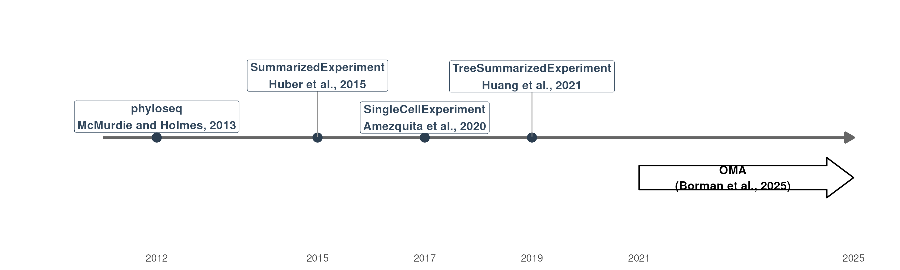
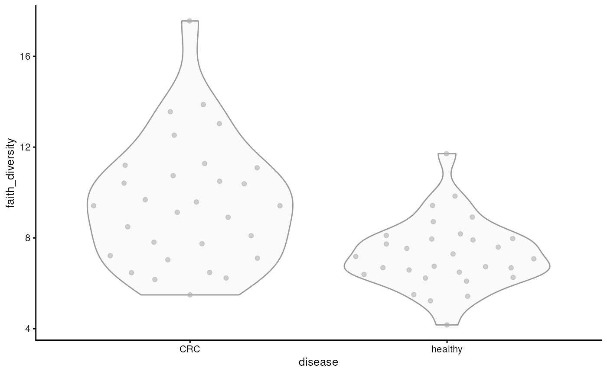
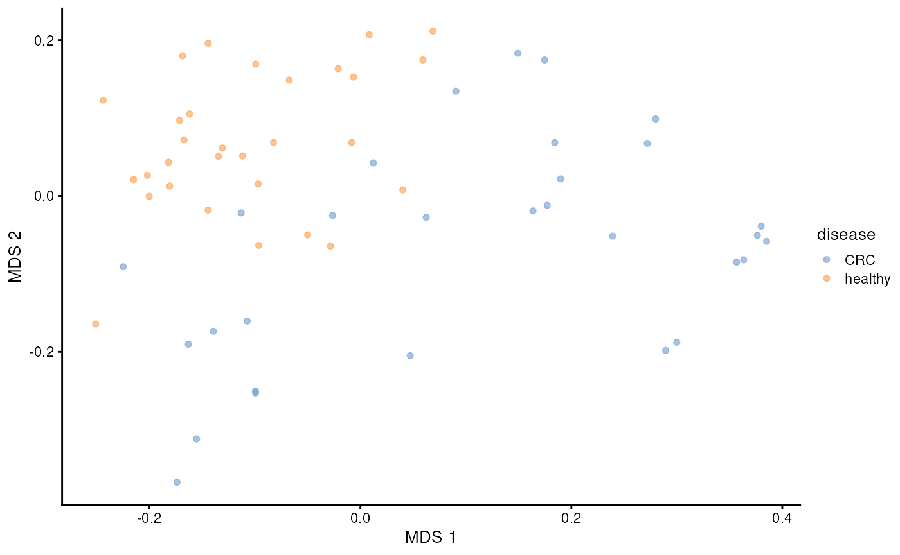

Authors: Tuomas Borman1
Last modified: 4 June, 2025.

Overview
Description
This training session introduces Bioconductor tools for microbiome data science through a practical case study. It focuses on a framework built around the TreeSummarizedExperiment data container, designed for improved efficiency, scalability, and data integration. Participants will gain hands-on experience with common analysis and visualization methods using the mia package family, along with other interoperable tools from the Bioconductor ecosystem. After the session, participants can continue learning through the freely available “Orchestrating Microbiome Analysis (OMA) online book”.
Pre-requisites
To get most of the training session, you should meet the following pre-requisites.
- You have a basic understanding of R. You have written simple R scripts or used Quarto/RMarkdown documents.
- You are familiar with Bioconductor.
- You have basic understanding on what the microbiome is.
If your time allows, we recommend to spend some time to explore beforehand Orchestrating Microbiome Analysis (OMA) online book.
Participation
Participants are encouraged to ask questions throughout the workshop. The session will follow a tutorial, with participants running the tutorial alongside the instructor.
To facilitate this, Galaxy & Bioconductor provide pre-installed virtual machines with all necessary packages.
R / Bioconductor packages used
In this training session, we will cover a common methods and packages for microbiome data science in SummarizedExperiment ecosystem. We will have specific focus on mia, which provides essential methods for conducting microbiome analysis.
Time outline
| Activity | Time |
|---|---|
| Practicalities and background | 15m |
| Trained-guided live coding | 45m |
| Time to try things out on your own | 15m |
| Questions, discussion and recap | 15m |
Learning goals and objectives
Questions
- What is mia and OMA?
- How microbiome data science is conducted in SummarizedExperiment ecosystem?
- What benefits this new ecosystem have compared to previous approaches?
Objectives
Analyze and apply methods: Apply the SummarizedExperiment ecosystem to process and analyze microbiome data.
Create visualizations: Generate and interpret visualizations.
Explore documentation: Use the OMA to explore additional tools and methods.
Training session
Background

Microbiome data science in Bioconductor
library(ggplot2)
library(ggrepel)
# Timeline data
timeline_data <- data.frame(
year = c(2012, 2015, 2017, 2019),
event = c(
"phyloseq\nMcMurdie and Holmes, 2013",
"SummarizedExperiment\nHuber et al., 2015",
"SingleCellExperiment\nAmezquita et al., 2020",
"TreeSummarizedExperiment\nHuang et al., 2021"
)
)
# Create a single polygon for the entire arrow (rectangle + arrowhead)
arrow_data <- data.frame(
x = c(2021, 2024.5, 2024.5, 2025, 2024.5, 2024.5, 2021),
y = c(-0.13, -0.13, -0.15, -0.10, -0.05, -0.07, -0.07)
)
ggplot(timeline_data, aes(x = year, y = 0)) +
# Base timeline
annotate(
"segment", x = 2011, xend = 2025, y = 0, yend = 0,
arrow = arrow(length = unit(0.4, "cm"), type = "closed"),
linewidth = 1.5, color = "gray40"
) +
# Timeline points and segments
geom_point(size = 5, color = "#2C3E50") +
# Repelled labels
geom_label_repel(
aes(
label = event),
direction = "y",
nudge_y = 0.02,
box.padding = 0.4,
point.padding = 0.5,
size = 5,
fontface = "bold",
color = "#34495E",
segment.color = "gray60"
) +
# mia: draw arrow-box from 2021 to 2025
geom_polygon(
data = arrow_data,
mapping = aes(x = x, y = y),
fill = "white", color = "black", linewidth = 0.8
) +
annotate(
"text", x = 2022.75, y = -0.10,
label = "OMA\n(Borman et al., 2025)",
size = 5, fontface = "bold", color = "black", lineheight = 1.1
) +
# Final theming
scale_x_continuous(
breaks = c(timeline_data$year, 2021, 2025),
limits = c(2010, 2025)
) +
scale_y_continuous(limits = c(-0.25, 0.3)) +
theme_minimal(base_size = 15) +
theme(
axis.title = element_blank(),
axis.text.y = element_blank(),
axis.text.x = element_text(size = 12),
axis.ticks = element_blank(),
panel.grid = element_blank(),
legend.position = "none",
plot.title = element_text(face = "bold", size = 16, hjust = 0.5)
)
Ochestrating Microbiome Analysis with Bioconductor (OMA)
- mia (Data analysis)
- miaViz (Visualization)
- miaSim (Simulation)
- miaTime (Time series analysis)
- miaDash (Graphical user interface)
- iSEEtree (Interactive visualization)
- Expanded by independent developers
Interoperable with the SummarizedExperiment ecosystem


Trained-guided live coding
Start your engines!
- Go to workshop.bioconductor.org
- Or prepare your local R session
Import data
The curated metagenomic data project provides free access to a
collection of curated microbiome datasets, which are available through
the curatedMetagenomicData R package (Pasolli et al. 2017). Currently, it contains
over 20,000 samples from 100 studies, which can be imported directly to
TreeSE format. You can see the full list of available
datasets from the
documentation.
Below, we we load a dataset containing 60 samples from healthy controls and patients with colorectal cancer (CRC).
library(curatedMetagenomicData)
res <- curatedMetagenomicData(
pattern = "GuptaA_2019",
dryrun = FALSE,
rownames = "short"
)Once loaded, we can see that the data includes several TreeSummarizedExperiment
objects, which include taxonomy annotations and functional predictions.
In this demonstration, we are only interested on the taxonomy
annotations, so we select it from the list and store it into a variable
named tse.
tse <- res[["2021-03-31.GuptaA_2019.relative_abundance"]]Data container
TreeSummarizedExperiment
extends SummarizedExperiment
class by adding a support for microbiome-specific datatypes. These
include, for instance, rowTree slot that can be utilized to
store phylogeny or any other hierarchical presentation of the data. All
slots derived from SummarizedExperiment
class are also available in TreeSummarizedExperiment,
providing full backward compatibility.

tse
#> class: TreeSummarizedExperiment
#> dim: 308 60
#> metadata(0):
#> assays(1): relative_abundance
#> rownames(308): species:Escherichia coli species:Alistipes putredinis
#> ... species:Campylobacter ureolyticus species:Prevotella sp. oral
#> taxon 376
#> rowData names(7): superkingdom phylum ... genus species
#> colnames(60): GupDM_A_11 GupDM_A_15 ... GupDM_JO GupDM_JP
#> colData names(27): study_name subject_id ... disease_stage
#> disease_location
#> reducedDimNames(0):
#> mainExpName: NULL
#> altExpNames(0):
#> rowLinks: a LinkDataFrame (308 rows)
#> rowTree: 1 phylo tree(s) (10430 leaves)
#> colLinks: NULL
#> colTree: NULLSlots can be accessed with dedicated accessor functions. For
instance, colData (sample metadata) can be accessed with
colData() function.
# Show only first five rows and columns
colData(tse)[1:5, 1:5]
#> DataFrame with 5 rows and 5 columns
#> study_name subject_id body_site antibiotics_current_use
#> <character> <character> <character> <character>
#> GupDM_A_11 GuptaA_2019 GupDM_A11 stool no
#> GupDM_A_15 GuptaA_2019 GupDM_A15 stool no
#> GupDM_A1 GuptaA_2019 GupDM_A1 stool no
#> GupDM_A10 GuptaA_2019 GupDM_A10 stool no
#> GupDM_A12 GuptaA_2019 GupDM_A12 stool no
#> study_condition
#> <character>
#> GupDM_A_11 CRC
#> GupDM_A_15 CRC
#> GupDM_A1 CRC
#> GupDM_A10 CRC
#> GupDM_A12 CRCData processing
Microbiome data has unique characteristics, meaning that dealing with
such data also poses unique challenges and approaches. The
mia package provides methods for performing common
operations on microbiome data within the SE ecosystem.
For instance, agglomeration is commonly used to reduce the number of features or to focus on biologically meaningful subgroups of the data. Agglomeration means merging data into higher taxonomic levels by summing the abundances of related taxa.
Below, we agglomerate the data into all available taxonomy levels.
library(mia)
tse <- agglomerateByRanks(tse)At first glance, it might seem that nothing has changed. However, the
agglomerated data is stored in the altExp slot. This slot
keeps track of the sample mapping and stores different versions of the
data.
We can access data agglomeration into the phylum level with the following command:
altExp(tse, "phylum")
#> class: TreeSummarizedExperiment
#> dim: 11 60
#> metadata(1): agglomerated_by_rank
#> assays(1): relative_abundance
#> rownames(11): Actinobacteria Bacteroidota ... Synergistetes
#> Verrucomicrobia
#> rowData names(7): superkingdom phylum ... genus species
#> colnames(60): GupDM_A_11 GupDM_A_15 ... GupDM_JO GupDM_JP
#> colData names(27): study_name subject_id ... disease_stage
#> disease_location
#> reducedDimNames(0):
#> mainExpName: NULL
#> altExpNames(0):
#> rowLinks: a LinkDataFrame (11 rows)
#> rowTree: 1 phylo tree(s) (11 leaves)
#> colLinks: NULL
#> colTree: NULLThe data looks similar to original data; only the number of rows has
changed. While we could store the phylum-level data in a separate
variable, it’s better to keep it in the altExp slot, as it
maintains consistent sample mapping for us.
Another data processing step where microbiome analysis has unique approaches is transformation. Below, we apply centered lo-ratio (CLR) transformation which respect the compositional nature of microbiome data.
tse <- transformAssay(
tse,
assay.type = "relative_abundance",
method = "clr",
pseudocount = TRUE
)The transformed abundance table is stored in the assay
slot. This slot now contains two tables: the original abundance table
and the CLR-transformed table We can access the transformed data with
the following command:
assay(tse, "clr")[1:5, 1:5]
#> GupDM_A_11 GupDM_A_15 GupDM_A1 GupDM_A10
#> species:Escherichia coli 10.178496 11.6516053 8.595739 10.189020
#> species:Alistipes putredinis 9.652743 -0.5960068 5.186345 -1.540499
#> species:Porphyromonas asaccharolytica 8.918831 -0.5960068 4.300300 -1.540499
#> species:Bacteroides uniformis 8.903202 -0.5960068 5.464096 -1.540499
#> species:Prevotella stercorea 8.773817 -0.5960068 5.231728 -1.540499
#> GupDM_A12
#> species:Escherichia coli 7.042800
#> species:Alistipes putredinis -1.410307
#> species:Porphyromonas asaccharolytica -1.410307
#> species:Bacteroides uniformis 5.473920
#> species:Prevotella stercorea 3.672227Community summaries
While mia package include common methods for analysis, miaViz provides methods for visualizing microbiome data. For instance, we can visualize abundance of phyla with a bar plot. To compare controls and CRC patients, we can visualize the groups separately.
library(miaViz)
# Get phylum-level data
tse_phyla <- altExp(tse, "phylum")
# Create a bar plot
plotAbundance(
tse_phyla,
assay.type = "relative_abundance",
col.var = "disease",
facet.cols = TRUE,
scales = "free"
)
From the figure, we observe that especially abundance of Euryarchaeota seems to differ between the groups.
Alpha diversity
To summarize the diversity of microbial communities, alpha diversity is commonly calculated. There are several diversity indices available, all of which measure the number of distinct taxa and how evenly their abundances are distributed, each with a different emphasis.
tse <- addAlpha(tse, assay.type = "relative_abundance")The results are stored in colData. By default,
addAlpha() returns a set of indices that considers
different aspects of diversity. Below, we visualize Faith’s diversity
that assess the phylogenetic diversity of samples.
library(scater)
plotColData(tse, x = "disease", y = "faith_diversity")
From the figure, we can observe that CRC patients have more diverse microbiomes. This may suggest that their gut is colonized by microbes that are not typically present in a healthy gut.
Beta diversity
While alpha diversity reflects within-sample diversity, beta diversity measures diversity between samples. This allows us to assess whether there are patterns in microbial profiles associated with covariates — such as diagnosis, in this case.
Below, we calculate perform principal coordinate analysis (PCoA) also known as multidimensional scaling (MDS). We apply UniFrac dissimilarity that takes into account phylogeny.
tse <- addMDS(
tse,
assay.type = "relative_abundance",
method = "unifrac"
)After calculating the results, we can visualize them with the diagnosis.
plotReducedDim(tse, dimred = "MDS", colour_by = "disease")
We can see clear pattern: microbial profiles of CRC patients are distinct from healthy controls.
Time to try things out on your own!
- Go to OMA (microbiome.github.io/OMA)
- Navigate to Differential abundance analysis chapter
- Do exercises 1-3
- Explore the book!

Differential abundance analysis
file_path <- file.path("maaslin3_output", "figures", "summary_plot.png")
knitr::include_graphics(file_path)Questions, discussion and recap
- Microbiome data science in SummarizedExperiment ecosystem
- Scalable and computationally efficient
- Integration of multi-table and multi-omics datasets
Thank you for your time!
Join us!
Online book: microbiome.github.io/OMA
Discussion forums: github.com/microbiome/OMA/discussions and Bioconductor Zulip


Session information
sessionInfo()
#> R version 4.5.0 (2025-04-11)
#> Platform: x86_64-pc-linux-gnu
#> Running under: Ubuntu 24.04.2 LTS
#>
#> Matrix products: default
#> BLAS: /usr/lib/x86_64-linux-gnu/openblas-pthread/libblas.so.3
#> LAPACK: /usr/lib/x86_64-linux-gnu/openblas-pthread/libopenblasp-r0.3.26.so; LAPACK version 3.12.0
#>
#> locale:
#> [1] LC_CTYPE=en_US.UTF-8 LC_NUMERIC=C
#> [3] LC_TIME=en_US.UTF-8 LC_COLLATE=en_US.UTF-8
#> [5] LC_MONETARY=en_US.UTF-8 LC_MESSAGES=en_US.UTF-8
#> [7] LC_PAPER=en_US.UTF-8 LC_NAME=C
#> [9] LC_ADDRESS=C LC_TELEPHONE=C
#> [11] LC_MEASUREMENT=en_US.UTF-8 LC_IDENTIFICATION=C
#>
#> time zone: Etc/UTC
#> tzcode source: system (glibc)
#>
#> attached base packages:
#> [1] stats4 stats graphics grDevices utils datasets methods
#> [8] base
#>
#> other attached packages:
#> [1] scater_1.37.0 scuttle_1.19.0
#> [3] miaViz_1.17.8 ggraph_2.2.1
#> [5] mia_1.17.4 MultiAssayExperiment_1.35.3
#> [7] TreeSummarizedExperiment_2.17.0 Biostrings_2.77.1
#> [9] XVector_0.49.0 SingleCellExperiment_1.31.0
#> [11] SummarizedExperiment_1.39.0 Biobase_2.69.0
#> [13] GenomicRanges_1.61.0 GenomeInfoDb_1.45.4
#> [15] IRanges_2.43.0 S4Vectors_0.47.0
#> [17] BiocGenerics_0.55.0 generics_0.1.4
#> [19] MatrixGenerics_1.21.0 matrixStats_1.5.0
#> [21] ggrepel_0.9.6 ggplot2_3.5.2
#>
#> loaded via a namespace (and not attached):
#> [1] RColorBrewer_1.1-3 jsonlite_2.0.0
#> [3] magrittr_2.0.3 TH.data_1.1-3
#> [5] estimability_1.5.1 ggbeeswarm_0.7.2
#> [7] farver_2.1.2 rmarkdown_2.29
#> [9] fs_1.6.6 ragg_1.4.0
#> [11] vctrs_0.6.5 memoise_2.0.1
#> [13] DelayedMatrixStats_1.31.0 ggtree_3.17.0
#> [15] htmltools_0.5.8.1 S4Arrays_1.9.1
#> [17] BiocBaseUtils_1.11.0 BiocNeighbors_2.3.1
#> [19] janeaustenr_1.0.0 cellranger_1.1.0
#> [21] gridGraphics_0.5-1 SparseArray_1.9.0
#> [23] sass_0.4.10 parallelly_1.45.0
#> [25] bslib_0.9.0 tokenizers_0.3.0
#> [27] htmlwidgets_1.6.4 desc_1.4.3
#> [29] plyr_1.8.9 DECIPHER_3.5.0
#> [31] sandwich_3.1-1 emmeans_1.11.1
#> [33] zoo_1.8-14 cachem_1.1.0
#> [35] igraph_2.1.4 lifecycle_1.0.4
#> [37] pkgconfig_2.0.3 rsvd_1.0.5
#> [39] Matrix_1.7-3 R6_2.6.1
#> [41] fastmap_1.2.0 tidytext_0.4.2
#> [43] aplot_0.2.5 digest_0.6.37
#> [45] ggnewscale_0.5.1 patchwork_1.3.0
#> [47] irlba_2.3.5.1 SnowballC_0.7.1
#> [49] textshaping_1.0.1 vegan_2.6-10
#> [51] beachmat_2.25.0 labeling_0.4.3
#> [53] polyclip_1.10-7 mgcv_1.9-3
#> [55] httr_1.4.7 abind_1.4-8
#> [57] compiler_4.5.0 withr_3.0.2
#> [59] BiocParallel_1.43.3 viridis_0.6.5
#> [61] DBI_1.2.3 ggforce_0.4.2
#> [63] MASS_7.3-65 DelayedArray_0.35.1
#> [65] bluster_1.19.0 permute_0.9-7
#> [67] tools_4.5.0 vipor_0.4.7
#> [69] beeswarm_0.4.0 ape_5.8-1
#> [71] glue_1.8.0 nlme_3.1-168
#> [73] gridtext_0.1.5 grid_4.5.0
#> [75] cluster_2.1.8.1 reshape2_1.4.4
#> [77] gtable_0.3.6 tzdb_0.5.0
#> [79] fillpattern_1.0.2 tidyr_1.3.1
#> [81] hms_1.1.3 tidygraph_1.3.1
#> [83] BiocSingular_1.25.0 ScaledMatrix_1.17.0
#> [85] xml2_1.3.8 pillar_1.10.2
#> [87] stringr_1.5.1 yulab.utils_0.2.0
#> [89] splines_4.5.0 tweenr_2.0.3
#> [91] dplyr_1.1.4 ggtext_0.1.2
#> [93] treeio_1.33.0 lattice_0.22-7
#> [95] survival_3.8-3 tidyselect_1.2.1
#> [97] DirichletMultinomial_1.51.0 knitr_1.50
#> [99] gridExtra_2.3 xfun_0.52
#> [101] graphlayouts_1.2.2 rbiom_2.2.0
#> [103] stringi_1.8.7 UCSC.utils_1.5.0
#> [105] ggfun_0.1.8 lazyeval_0.2.2
#> [107] yaml_2.3.10 evaluate_1.0.3
#> [109] codetools_0.2-20 tibble_3.2.1
#> [111] BiocManager_1.30.25 ggplotify_0.1.2
#> [113] cli_3.6.5 xtable_1.8-4
#> [115] systemfonts_1.2.3 jquerylib_0.1.4
#> [117] readxl_1.4.5 Rcpp_1.0.14
#> [119] coda_0.19-4.1 parallel_4.5.0
#> [121] pkgdown_2.1.3 readr_2.1.5
#> [123] sparseMatrixStats_1.21.0 slam_0.1-55
#> [125] decontam_1.29.0 viridisLite_0.4.2
#> [127] mvtnorm_1.3-3 tidytree_0.4.6
#> [129] scales_1.4.0 purrr_1.0.4
#> [131] crayon_1.5.3 BiocStyle_2.37.0
#> [133] rlang_1.1.6 cowplot_1.1.3
#> [135] multcomp_1.4-28References
University of Turku, tvborm@utu.fi↩︎